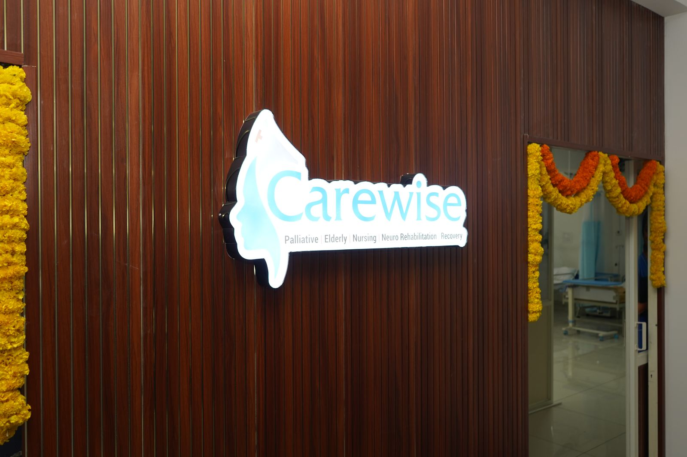
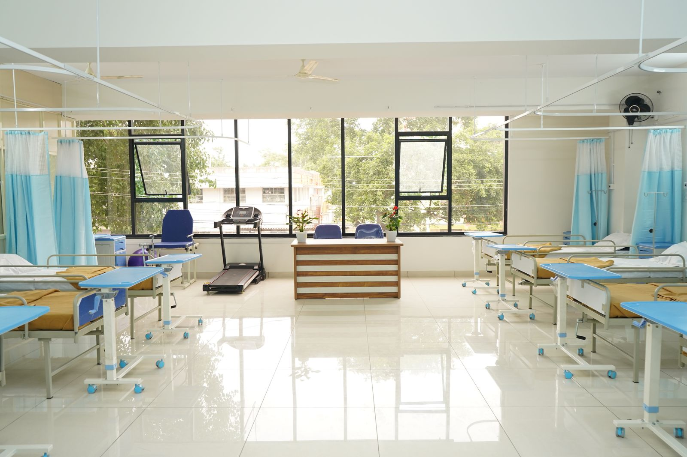
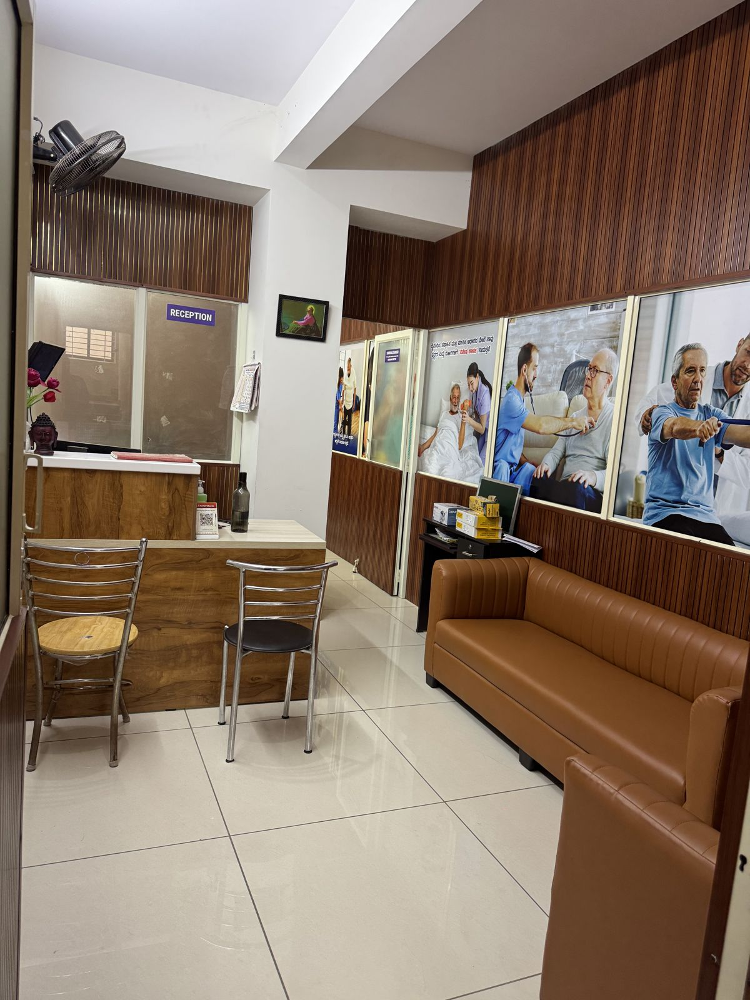
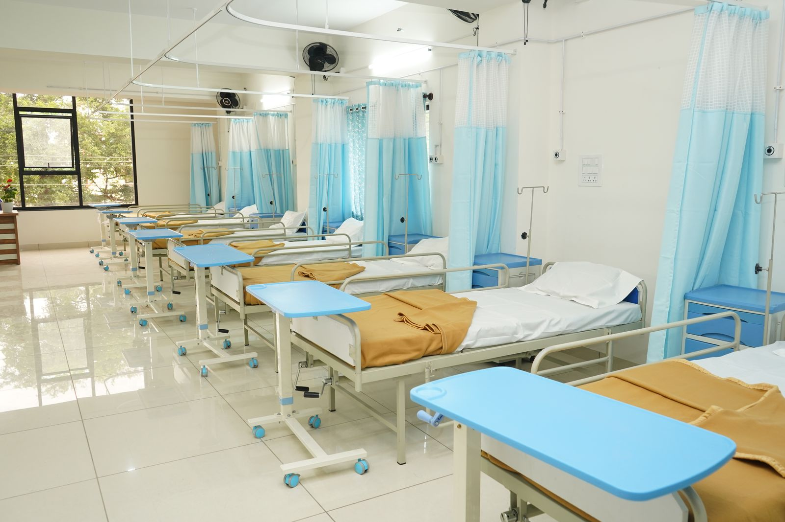
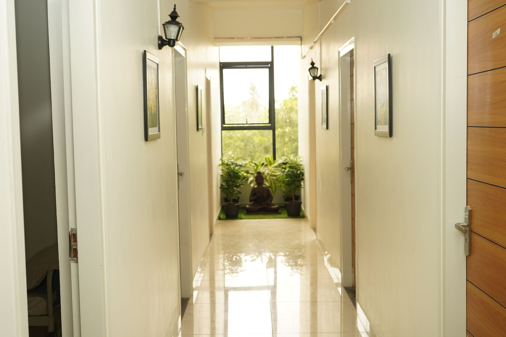
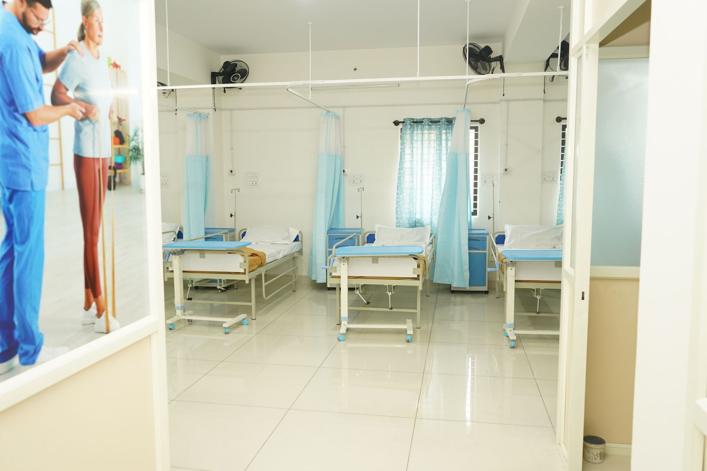
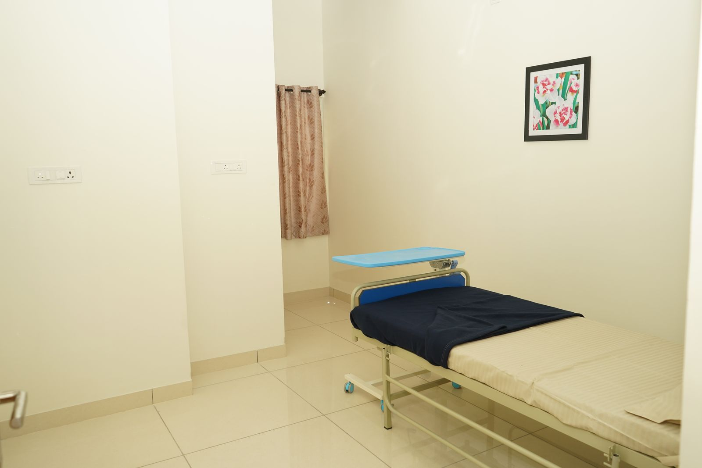
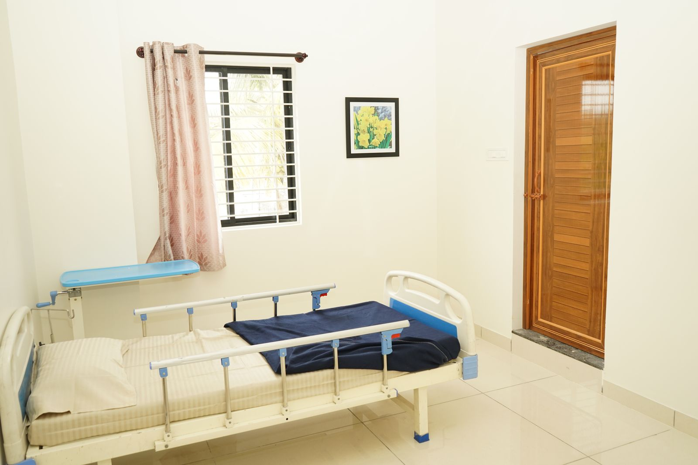

Stroke recovery
Early mobilisation, gait training and arm and hand retraining to regain independence after a stroke.

At Carewise Centre, doctors, physiotherapists and 24/7 nurses help your parents recover from stroke, brain and spinal injury and major surgery, with palliative care when comfort matters most. Home visits are available too.

Carewise Centre in Mysuru is built for the weeks and months after a stroke, a brain or spinal injury or major surgery: round-the-clock nursing, daily doctor rounds, in-house physiotherapy and private rooms where family can stay.
The same team provides palliative and long-term medical care, so your parents never have to move when their needs change.
Structured, goal-based rehabilitation programmes at the Centre for the conditions families bring to us most often.
Early mobilisation, gait training and arm and hand retraining to regain independence after a stroke.
Strength, balance, bladder and skin care, and adaptive training for life after injury.
Programmes that improve walking, balance and daily tasks and slow decline.
Speech-language therapy for aphasia, dysarthria and safe swallowing after stroke.
Memory, attention and problem-solving work for stroke, injury and early dementia.
Supervised recovery after brain or spine surgery, with pain and wound management.
Our doctor and physiotherapist assess mobility, speech, swallowing and daily needs and set clear goals.
Therapy sessions every day, nursing care around the clock and nutrition planned for recovery.
Goals are measured and adjusted each week, and the family is walked through progress.
Discharge planning, home exercises and, if needed, home visits from the same team.

“Not just treating their condition. Celebrating their existence.”
Our philosophy centres on dignity, comfort and the joy of living, for every person in our care.
Private rooms, a rehabilitation ward, therapy space and a family lounge, a short drive from anywhere in Mysuru.










Comfort-focused care for serious illness, with pain and symptom relief led by doctors.
Help with daily living and medical needs, delivered with patience and respect.
Intensive physiotherapy and occupational therapy to regain independence.
Monitoring, medication and wound management in the weeks after surgery.
Expert management of chronic ulcers, bedsores and surgical wounds.
Advanced respiratory support with trained staff round the clock.
Pain management, nutrition and emotional support through treatment.
A safe, structured environment that supports cognitive health and calm.
Ongoing support for diabetes, heart, kidney and other chronic conditions.
Professional care in a calm shared setting.
Maximum privacy and a personalised space for family.
Everyday life at the Carewise Centre and the families we care for, straight from our Instagram.
When the Centre is not needed, our nurses, physiotherapists and doctors can visit your parents at home in Mysuru for follow-up therapy, nursing and check-ups.
Carewise gave my father the dignity and medical care he needed when we couldn't manage at home. The staff treated him like family.
Living abroad, I was constantly worried about my mother's post-stroke recovery. The daily updates kept me connected and at peace.
The palliative care team didn't just manage the pain. They brought a sense of calm to our entire family during a difficult time.
After Amma's hip surgery the physiotherapists came home every day. Within six weeks she was walking to the temple again.
I could speak to the doctor on a video call every week. For a family living abroad, that kind of access means everything.
My husband was on BiPAP support for months. The nurses were patient, skilled and always explained what they were doing.
The private room felt like home, not a hospital. Appa had his own routine, his favourite food and people who knew his name.
Dementia care is hard to find done well. Carewise kept my grandmother safe and calm, and kept us informed every single day.
Carewise gave my father the dignity and medical care he needed when we couldn't manage at home. The staff treated him like family.
Living abroad, I was constantly worried about my mother's post-stroke recovery. The daily updates kept me connected and at peace.
The palliative care team didn't just manage the pain. They brought a sense of calm to our entire family during a difficult time.
After Amma's hip surgery the physiotherapists came home every day. Within six weeks she was walking to the temple again.
I could speak to the doctor on a video call every week. For a family living abroad, that kind of access means everything.
My husband was on BiPAP support for months. The nurses were patient, skilled and always explained what they were doing.
The private room felt like home, not a hospital. Appa had his own routine, his favourite food and people who knew his name.
Dementia care is hard to find done well. Carewise kept my grandmother safe and calm, and kept us informed every single day.
Anyone recovering from a stroke, brain or spinal injury or major surgery, and anyone who needs palliative or long-term medical care with 24/7 nursing. Our doctor assesses your parent and sets a plan on day one.
Yes. Every family receives daily updates from the care team, and you can reach your coordinator at any time.
Every nurse, caretaker and therapist is identity and background verified and trained in elderly and palliative care before joining.
Home care usually begins within 24 to 48 hours of assessment. Admission to the centre can often be arranged the same day.
Book a walk-through with our care coordinator, or call to discuss your parent's recovery.